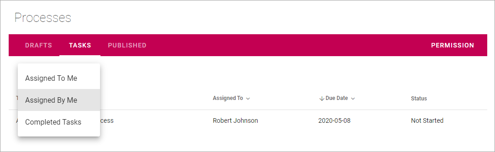
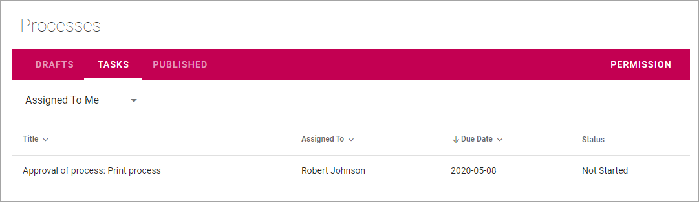
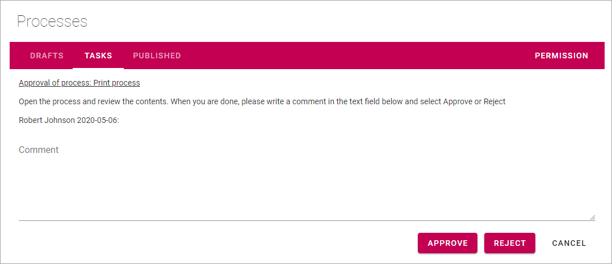
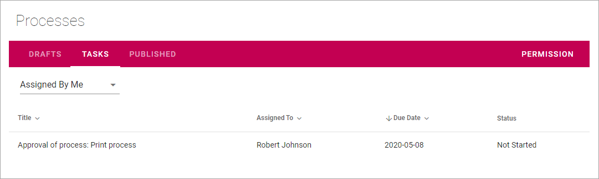
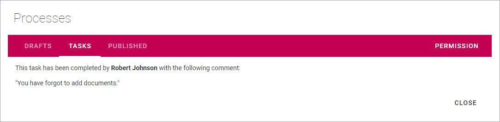

Working with tasks when authoring processes¶
Using the Tasks tab you can see three different lists:
Assigned To Me¶
As it says, this list displays all tasks that have been assigned to you.
To work with a task, just click the Title, and then something like the following is shown:
You can click the link to preview the process.
Approve or reject a process¶
When you approve a process for publication, the author receives a notification stating that has been done.
You approve publication of the process the following way:
- Click the link to check the process and then close it.
- Type a message if you want (not mandatory).
- Click “APPROVE”.
If you reject publication for a process, the author receives a notification about that, makes necessary changes and can after that publish again.
You reject publication of the process the following way:
- Click the link to check the process and then close it.
- Type a message of what needs to be changed (strictly speaking not mandatory, but something you should normally do).
- Click “REJECT”.
Assigned By Me¶
This list displays all Tasks created, when you sent a process for publication. To check the progress for any of the tasks, click the Title.
Something like the following is then shown:
Completed Tasks¶
As it says, this tab displays a list of completed tasks, for example:

You can see additional information, for example comments, by clicking the Title. Here’s a simple example of what can be shown:
